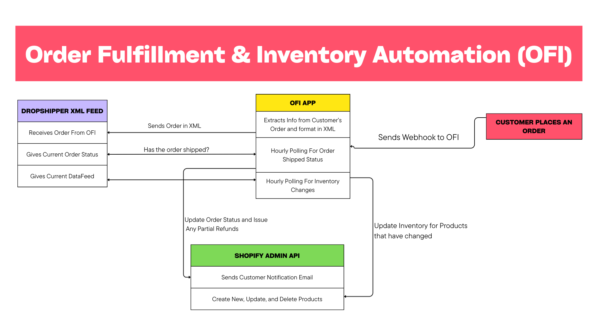

Stack: Node.js · Shopify Admin API · XML APIs · Axios · Nodemailer · Heroku Scheduler
Year: 2019 (Refactored 2025)
View Project on GithubI built an automation system that connects a Shopify store to a legacy third-party dropshipper that had no native Shopify integration. The system handles order submission, shipment tracking, partial cancellations, refunds, and inventory synchronization — without manual intervention. This project powered a real e-commerce business and ran on a schedule, quietly doing its job while everyone else slept.
The business relied on a dropshipper that only supported XML-based APIs and offered no real-time webhooks. Orders were being processed manually, inventory frequently went out of sync, and partial shipments caused confusion for both customers and staff. In short:
This was not a clean, modern REST-only environment. Key constraints included:

I designed the system as three independent processes: